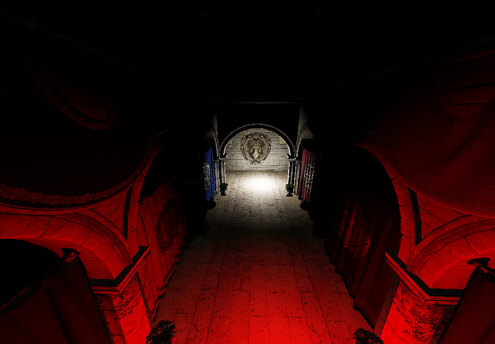

This project is a real-time rendering engine. It uses the Vulkan SDK and some modern Vulkan2 features like Dynamic Vertex Input and Dynamic Rendering. It support scene loading from GLTF, a modular pipeline, deferred rendering, PBR material and 2 types of lights, directional and point lights.
The main technical challenge of this project was to implement a deferred rendering pipeline using Vulkan. This required a good understanding of the Vulkan API and its synchronization mechanisms, as well as the implementation of a custom render graph to manage the rendering passes and their dependencies.
